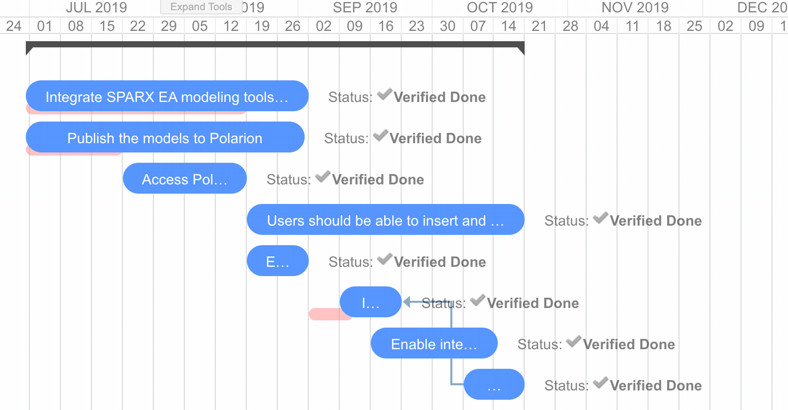
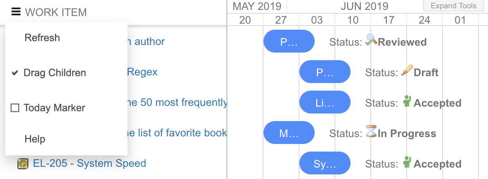

Release Notes
Changelog
Info
The latest plugin distribution is available here
For those who read this documentation embedded in Polarion: you can check the online version for up-to-date changelog: https://nextedy.github.io/gantt-docs/changelog/
1.5.0 _ July 1, 2019 07:45
- Big release with many customer enhancements and with addition of ~Plans Gantt Widget~ (added for free) justifies the big shift on version number.
- Support for duration fields in DurationTime format (converts to days only)
- Compare actual vs planned (req quires Task Script to configure how to load the original schedule)

1.0.3 _ May 29, 2019 17:45
- Action menu added
- Refresh action to reload the Gantt
- Drag children control - add an option to turn on/off drag children instantly on Gantt, the widget property holds the default
- Today Marker - add marker for today + scroll to today
- Set Scale - add an option to set the timeline scale instantly on Gantt, the widget property would hold the default.

1.0.2 _ May 28, 2019 17:20
- Documentation improvements
- Script support added to decorate a task based on work item properties, see Widget > Task Script
- Infinite loop on parent links (should not happen in Polarion) does not cause gantt to fail (but data do not load).
- Project style support (via Task Script)
- License at polarion/polarion/gantt-lic.json
1.0.1 _ May 15, 2019
- Published on extensions.polarion.com
- New Work Items Gantt widget icon.
- Widget tags configured - "Work Items", "Charts"
gantt.config.round_dnd_datesreflected when dragging children
1.0.0 _ May 5, 2019
- After couple of months of development and use in several customer projects we officially release the public version 1.0.0.
TODO
- Readonly - add widget property to mark Gantt read-only
- Server Side Scripted Tooltip - add widget property - a script - to hold a generation of tooltip on the server side ...
- Partially possibly in 1.0.2 with
Task Script
- Partially possibly in 1.0.2 with
- Item Colors based on Type - make it possible to color the tasks based on item type.
- Partially possibly in 1.0.2 with
Task Script
- Partially possibly in 1.0.2 with
Known Issues
- When you collapse a left side Polarion navigator, the empty place appears on the right (collapse/drag fixes it)